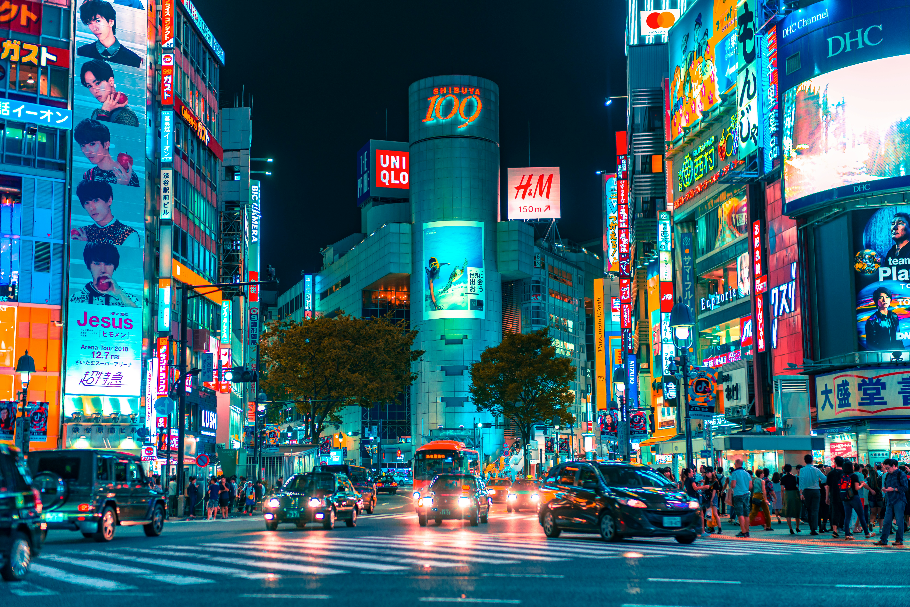
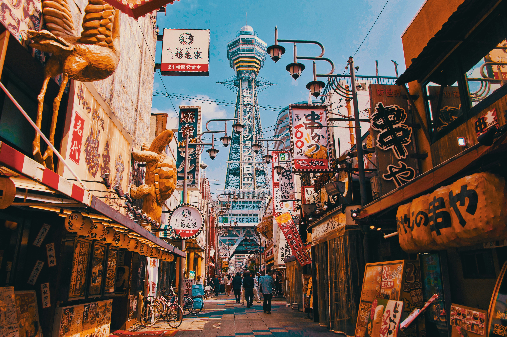

TokyoShibuya & Meiji Shrine 渋谷・明治神宮
Experience neon streets and calm tradition — a perfect mix of modern life and heritage. ネオンと伝統が共存する東京の魅力を体験できます。
Welcome / ようこそ
Explore iconic cities, hidden gems, and must-know travel info — designed for international visitors. 日本の魅力を、もっと近くに。
A few must-visit places for first-time travelers. Click “Details” for quick info. 初めての旅行におすすめ。 「Details」で住所・時間・アクセスを確認できます。

TokyoExperience neon streets and calm tradition — a perfect mix of modern life and heritage. ネオンと伝統が共存する東京の魅力を体験できます。
Walk through thousands of iconic torii gates — one of Japan’s most famous cultural sights. 千本鳥居で有名な神社。写真スポットとしても人気です。

OsakaTaste Osaka’s takoyaki and okonomiyaki while enjoying lively nightlife by the canal. たこ焼き・お好み焼きを楽しみながら夜景散歩。
Quick essentials: transport, payment, etiquette, seasons, internet, and safety. 交通・支払い・マナー・季節・ネット・安全情報をまとめました。
Use IC cards (Suica / PASMO / ICOCA) for easy rides. Shinkansen is fastest for long distance. ICカードは便利。長距離は新幹線が速いです。
Cards are common in cities, but small shops may prefer cash. Keep some yen. 都市部はカード可でも、現金が必要な店もあります。
Be quiet on trains and respect shrine/temple rules. 電車では静かに。寺社のルールを守りましょう。
Spring for cherry blossoms, autumn for colorful leaves. Summer is hot & humid. 春は桜、秋は紅葉。夏は暑く湿気が多いです。
Use eSIM/SIM or pocket Wi-Fi. Coverage varies by place. eSIM・SIM・ポケットWi-Fiが便利です。
Japan is very safe, but keep emergency basics ready. 安全ですが、緊急時の準備は大切です。
Practical tips to make your trip smoother. 旅をもっと快適にするポイント。
Buy at airport or book online. Pocket Wi-Fi is great for groups. 空港またはオンライン予約がおすすめ。
Use takkyubin to send bags between hotels — super convenient. 宅配便でホテル間配送が便利です。
Try local markets and small shops — many have picture menus. 市場や小さなお店もおすすめ。写真メニューも多いです。
Public bins are rare — carry a small bag. ゴミ箱が少ないので袋を持つと便利。
Popular restaurants and attractions may require booking. 人気店は予約が必要な場合があります。
Wash before entering; tattoos may be restricted in some places. 入浴前に体を洗い、タトゥー制限も確認。
Ask a question or send feedback. 質問やフィードバックを送ってください。